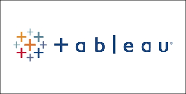

The main goal of this project was to process and analyze data
from a fictional company called 'Cyclistic' for the previous 12 months.
The aim was to deliver key insights and recommendations to the stakeholders,
focusing on identifying trends in the usage of Cyclistic bikes.
Dashboard designed to provide a comprehensive overview of sales and customer data from a scale model vehicle factory using SQL to conduct RFM Analysis for customer segmentation and Power BI to craft an interactive and informative dashboard.

SQL Project using SQL to explore Online Car Sales Data and prepare the data for creating a Sales Dashboard.

Data exploratory analysis conducted utilizing PostgreSQL and creation of a dynamic and informative dashboard in Tableau.

Project made by taking raw housing data and transforming it in SQL Server to make it more usable for analysis.